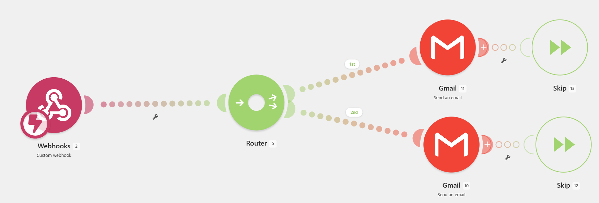

どちらも「あなた自身のアカウント」上で動く中継役を用意し、そのURLをQuick Mail Senderに登録する、という考え方は共通です。開発者はこのURLや送信内容を一切取得しません。
🔧 Google Apps Script (GAS) の場合
- script.google.com を開き、「新しいプロジェクト」を作成します
-
Code.gsテンプレート（GitHub）
の内容をすべてコピーし、プロジェクトに貼り付けます
- コード内の
SHARED_SECRET を、自分だけの合言葉に書き換えます（第三者による悪用防止のため）
- 右上「デプロイ」→「新しいデプロイ」→ 種類で「ウェブアプリ」を選択します
- 「実行するユーザー」を 自分、「アクセスできるユーザー」を 全員 にしてデプロイします
- 発行された「ウェブアプリURL」（
.../exec で終わるURL）をコピーします
- このページの「自動送信」タブに戻り、GAS Webアプリ URLと、先ほど決めた合言葉（共有シークレット）を入力して保存します
スクリーンショットの自動送信もそのまま対応しています。追加設定は不要です。
🔧 Make.com の場合
- Make.com で新しいシナリオを作成し、最初のモジュールに「Webhooks」→「Custom webhook」を選びます
- 「Add」を押してWebhookに好きな名前を付けると、専用のWebhook URLが発行されるのでコピーします
- 発行されたURLをこのページの「自動送信」タブに一時的に貼り付けて保存・有効化し、一度だけ試しに送信してみます（Make.com側にサンプルの形式を覚えさせるためです）
- 左側の「Webhooks」モジュール（Gmail側ではありません）をクリックし、「Redetermine data structure（データ構造を再設定）」を押すと、届いたデータから
to・subject・body の3項目が自動的に認識されます。このボタンは一度もテスト送信していないと出てきません（③で送信済みであることが前提です）
- 「＋」で次のモジュールを追加し、Gmailなどのメール送信サービスを検索して「Send an Email（メールを送信）」アクションを選びます
- Gmailモジュールの「宛先」は、まず「＋ 受取人を追加」を押して入力欄を1つ追加します。追加された欄をクリックすると
to が候補として表示されるのでクリックして選びます。「主題」には subject、「内容」には body を同じようにクリックして選べば紐付け完了です。文字を直接入力する必要はありません
- 画面右上のスイッチをONにしてシナリオを保存すれば設定完了です
📎 スクリーンショットも自動送信したい場合
- 画像は「実際のファイル」としてアップロードされる形式になっています。まずWebhookモジュールで、スクショを一度試し送信 →「Redetermine data structure（データ構造を再設定）」をやり直してください。すると新しく画像用の項目（
attachmentやfiles[]）が認識されます
- Gmailモジュールの「Attachments」→「Add attachment」で、File nameには
attachment: name（またはfiles[].name）を、Dataにはattachment: dataをそれぞれクリックして挿入してください。toBinaryなどの関数は不要です
📋 Webhookに届く項目の意味
attachment: アップロードされた画像1枚をまとめたデータ（name・mime・dataを含む）attachment: name / files[].name: ファイル名（例: screenshot.png）attachment: mime: ファイルの種類（例: image/png）。Make側で使わなくても問題ありませんattachment: data: 画像の中身そのもの（添付ファイルのData欄に使うのはこれです）files[]: アップロードされた全ファイルの一覧。今回は画像1枚だけなのでattachmentと同じ内容です。名前だけこちらから取ってもOKです
⚠️ 添付を設定すると、画像なしのテキスト送信が失敗するようになります
Gmailモジュールの「File name」「Data」が必須（*）になっているため、スクショ以外の送信では中身が空になり「必須フィールドが空」というエラーで失敗します。
Webhookの直後に「Router」を追加し、2つのルートに分けてください：①「attachment: data が空でない」→ 添付ありのGmailモジュールへ ②「attachment: data が空」→ 添付なしの別のGmailモジュール（Attachmentを設定していないもの）へ。
さらに、分岐した2つのGmailモジュールにはそれぞれ「Flow Control」の「Skip」をエラーハンドラとして付けてください（Gmailモジュールを右クリック→「Add error handler」→「Skip」）。条件に一致しなかった側のルートでエラーが出ても、シナリオ全体を失敗させずにそのルートだけスキップできるようにするためです。

⚠️ ウェブアプリURL・WebhookURL・合言葉を知っている人は誰でもあなたのアカウントからメールを送信できてしまいます。他人と共有しないでください。